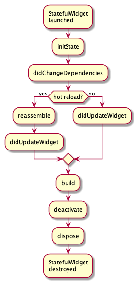

1.1. State生命周期
理解State的生命周期对Flutter开发非常重要，此处通过一个实例来说明一下State的舍命周期。
我们实现一个计数器Widget，点击使计数器加1，由于要保存计数器的数值状态，所以我们应继承StatefulWidget：
class CounterWidget extends StatefulWidget {
const CounterWidget({
Key key,
this.initValue: 0
});
final int initValue;
@override
_CounterWidgetState createState() => new _CounterWidgetState();
}
CounterWidget接收一个initValue整型参数，它表示计数器的初始值。下面我们看一下State的部分：
class _CounterWidgetState extends State<CounterWidget> {
int _counter;
@override
void initState() {
super.initState();
//初始化状态
_counter=widget.initValue;
print("initState");
}
@override
Widget build(BuildContext context) {
print("build");
return Scaffold(
body: Center(
child: FlatButton(
child: Text('$_counter'),
//点击后计数器自增
onPressed:()=>setState(()=> ++_counter,
),
),
),
);
}
@override
void didUpdateWidget(CounterWidget oldWidget) {
super.didUpdateWidget(oldWidget);
print("didUpdateWidget");
}
@override
void deactivate() {
super.deactivate();
print("deactive");
}
@override
void dispose() {
super.dispose();
print("dispose");
}
@override
void reassemble() {
super.reassemble();
print("reassemble");
}
@override
void didChangeDependencies() {
super.didChangeDependencies();
print("didChangeDependencies");
}
}
接下来，我们创建一个新路由，在新路由中，我们只显示一个CounterWidget：
Widget build(BuildContext context) {
return CounterWidget();
}
我们运行应用并打开该路由页面，在新路由页打开后，屏幕中央就会出现一个数字0，然后控制台日志输出：
I/flutter ( 5436): initState
I/flutter ( 5436): didChangeDependencies
I/flutter ( 5436): build
可以看到，在StatefulWidget插入到Widget树时首先initState方法会被调用。
然后我们点击⚡️按钮热重载，控制台输出日志如下：
I/flutter ( 5436): reassemble
I/flutter ( 5436): didUpdateWidget
I/flutter ( 5436): build
可以看到此时initState和didChangeDependencies都没有被调用，而此时didUpdateWidget被调用。
接下来，我们在widget树中移除CounterWidget，将路由build方法改为：
Widget build(BuildContext context) {
//移除计数器
//return CounterWidget();
//随便返回一个Text()
return Text("xxx");
}
然后热重载，日志如下：
I/flutter ( 5436): reassemble
I/flutter ( 5436): deactive
I/flutter ( 5436): dispose
我们可以看到，在CounterWidget从widget树中移除时，deactive和dispose会依次被调用。
下面我们来看看各个回调函数：
initState：当Widget第一次插入到Widget树时会被调用，对于每一个State对象，Flutter framework只会调用一次该回调，所以，通常在该回调中做一些一次性的操作，如状态初始化、订阅子树的事件通知等。不能在该回调中调用BuildContext.inheritFromWidgetOfExactType（该方法用于在Widget树上获取离当前widget最近的一个父级InheritFromWidget，关于InheritedWidget我们将在后面章节介绍），原因是在初始化完成后，Widget树中的InheritFromWidget也可能会发生变化，所以正确的做法应该在build()方法或didChangeDependencies()中调用它。didChangeDependencies()：当State对象的依赖发生变化时会被调用；例如：在之前build()中包含了一个InheritedWidget，然后在之后的build()中InheritedWidget发生了变化，那么此时InheritedWidget的子widget的didChangeDependencies()回调都会被调用。典型的场景是当系统语言Locale或应用主题改变时，Flutter framework会通知widget调用此回调。build()：此回调读者现在应该已经相当熟悉了，它主要是用于构建Widget子树的，会在如下场景被调用：在调用
initState()之后。- 在调用
didUpdateWidget()之后。 - 在调用
setState()之后。 - 在调用
didChangeDependencies()之后。 在State对象从树中一个位置移除后（会调用deactivate）又重新插入到树的其它位置之后。
reassemble()：此回调是专门为了开发调试而提供的，在热重载(hot reload)时会被调用，此回调在Release模式下永远不会被调用。didUpdateWidget()：在widget重新构建时，Flutter framework会调用Widget.canUpdate来检测Widget树中同一位置的新旧节点，然后决定是否需要更新，如果Widget.canUpdate返回true则会调用此回调。正如之前所述，Widget.canUpdate会在新旧widget的key和runtimeType同时相等时会返回true，也就是说在在新旧widget的key和runtimeType同时相等时didUpdateWidget()就会被调用。deactivate()：当State对象从树中被移除时，会调用此回调。在一些场景下，Flutter framework会将State对象重新插到树中，如包含此State对象的子树在树的一个位置移动到另一个位置时（可以通过GlobalKey来实现）。如果移除后没有重新插入到树中则紧接着会调用dispose()方法。dispose()：当State对象从树中被永久移除时调用；通常在此回调中释放资源。
